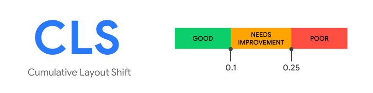

CLS is a measure of the largest burst of layout shift scores for every unexpected layout shift that occurs during the lifespan of a page. A layout shift occurs any time a visible element changes its position from one rendered frame to the next. See Layout shift score for details on how these shifts are measured. A burst of layout shifts, known as a session window, is when one or more individual layout shifts occur in rapid succession with less than 1 second between each shift, during a maximum period of 5 seconds. The largest burst is the session window with the maximum cumulative score of all layout shifts within that window.
To provide a good user experience, a site must have a CLS score of 0.1 or less. To ensure you're hitting this target for most of your users, we recommend measuring the 75th percentile of page loads, segmented across mobile and desktop devices.
LCP reports the render time of the largest image or text block visible in the viewport, relative to when the user first navigated to the page
To provide a good user experience, sites should strive to have LCP of 2.5 seconds or less. To ensure you're hitting this target for most of your users, a good threshold to measure is the 75th percentile of page loads, segmented across mobile and desktop devices.

FID measures the time from when a user first interacts with a page (that is, when they click a link, tap on a button, or use a custom, JavaScript-powered control) to the time when the browser is actually able to begin processing event handlers in response to that interaction
To provide a good user experience, sites should strive to have a First Input Delay of 100 milliseconds or less. To ensure you're hitting this target for most of your users, a good threshold to measure is the 75th percentile of page loads, segmented across mobile and desktop devices.